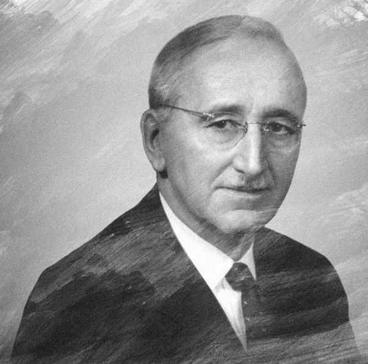
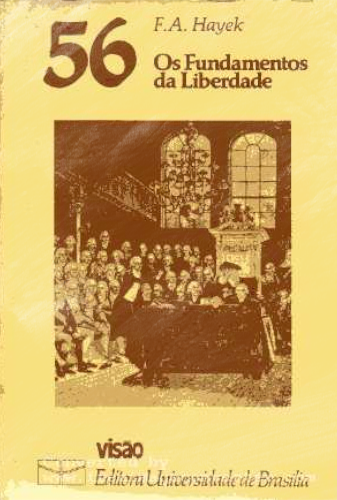
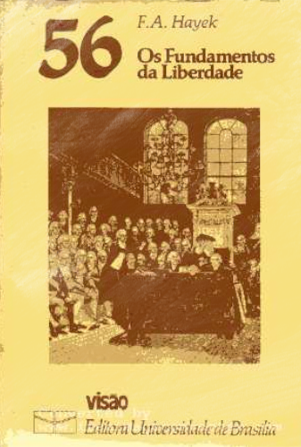

Friedrich August von Hayek
Friedrich August von Hayek (Viena, 8 de maio de 1899 — Friburgo em Brisgóvia, 23 de março de 1992) foi um economista e filósofo austríaco, posteriormente naturalizado britânico. É considerado um dos maiores representantes da Escola Austríaca de pensamento econômico. Foi defensor do liberalismo clássico e procurou sistematizar o pensamento liberal clássico para o século XX, época em que viveu. Realizou contribuições para a filosofia do direito, economia, epistemologia, história das ideias, história econômica, psicologia, entre outras áreas. Recebeu o Prêmio de Ciências Econômicas em Memória de Alfred Nobel de 1974, "por seu trabalho pioneiro na teoria da moeda e flutuações econômicas e pela análise penetrante da interdependência dos fenômenos econômicos, sociais e institucionais", que dividiu com seu rival ideológico Gunnar Myrdal.
Nasceu em Viena, em uma família de cientistas e professores. Seu pai era professor de Botânica na Universidade de Viena. Quando jovem, escolheu a carreira de economista. Serviu na Primeira Guerra Mundial, e disse que a experiência da guerra e seu desejo de evitar que ressurgissem os erros que levaram ao conflito tiveram grande influência na sua carreira. Morou na Áustria, na Grã-Bretanha, nos EUA e na Alemanha, tornando-se cidadão britânico em 1938. Passou o maior tempo de sua carreira na London School of Economics (LSE), na Universidade de Chicago e na Universidade de Freiburg.
Em 1984, tornou-se membro da Order of the Companions of Honour, por indicação da Rainha Elizabeth II, no conselho da Primeira Ministra Margaret Thatcher, por seus "serviços no estudo da economia". Ele foi a primeira pessoa a receber o Prêmio Hanns Martin Schleyer, em 1984. Recebeu também a US Presidential Medal of Freedom do presidente George H. W. Bush, em 1991. Em 2011, seu artigo O Uso do Conhecimento na Sociedade foi selecionado como um dos 20 principais artigos publicados pela The American Economic Review durante seus primeiros 100 anos.
Foi um importante teórico social e filósofo político do século XX, e sua consideração sobre como a mudança dos preços comunica conhecimento, o que permite aos indivíduos coordenarem seus planos, é amplamente considerada como uma das grandes proezas da ciência econômica. Na psicologia, propôs uma teoria da mente humana segundo a qual a mente é um sistema adaptativo. Em Economia, defendeu os méritos da ordem espontânea. Fez trabalhos importantes sobre a evolução social, sobre os fenômenos complexos e a metodologia das ciências sociais. Fundou a Mont Pèlerim Society com outros liberais para propagar o liberalismo no pós-guerra, entre os quais estavam Michael Polanyi, Ludwig von Mises, Bertrand de Jouvenel, Wilhelm Röpke, Milton Friedman, Frank Knight, Lionel Robbins, Karl Popper e outros pensadores de relevo.
Principais Obras
 
